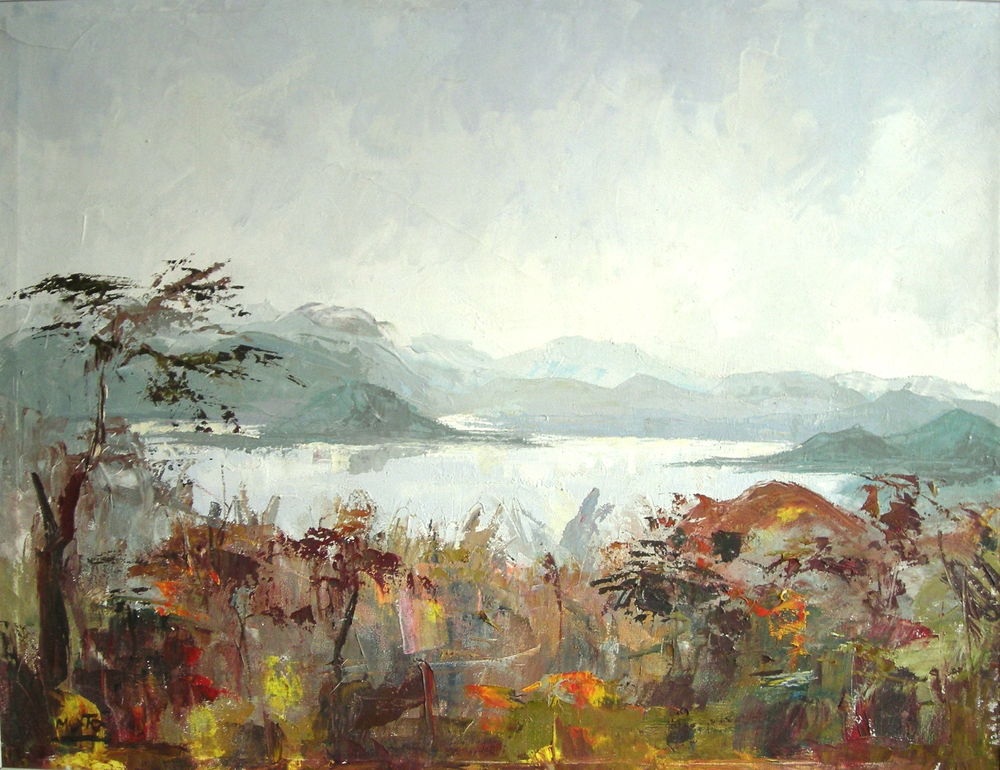

Alphonse Moto
1938 –
Artist Biography
Alphonse Moto was born in Buta, in the north of then Belgian Congo (now Democratic Republic of Congo). He studied art in Brazzaville (now Republic of Congo), most likely largely under European teachers, before spending two years in Europe furthering his studies and paying his way through sales of art. He had two successful shows in Brussels, followed by further exhibitions in France and Germany. On his return to the Congo, however, political unrest saw him flee to Uganda. He had become disillusioned with the art scene in the Congo, telling an interviewer for the Belgian Le Soir newspaper in August 1962 that even those with formal art training had to find white patrons because local Congolese had no spare resources to buy art. Moto had moved from Uganda by the mid-1960s and settled in Nairobi. He found success in Kenya but still felt he had to paint wildlife scenes to improve the chances of sales to a mainly European or colonial clientele. Moto had a major solo show in the Uganda Gallery in Kampala in 1966 and Gallery Africa in Nairobi also showed his work in 1970 alongside those of other leading artists such as Eli Kyeyune, Francis Msangi and Edward Njenga. Moto was one of only a limited number of African artists of that era that held exhibitions abroad; a later one was a solo show in Tucson, Arizona in 1971. After that there is little evidence of what became of Moto.

Untitled